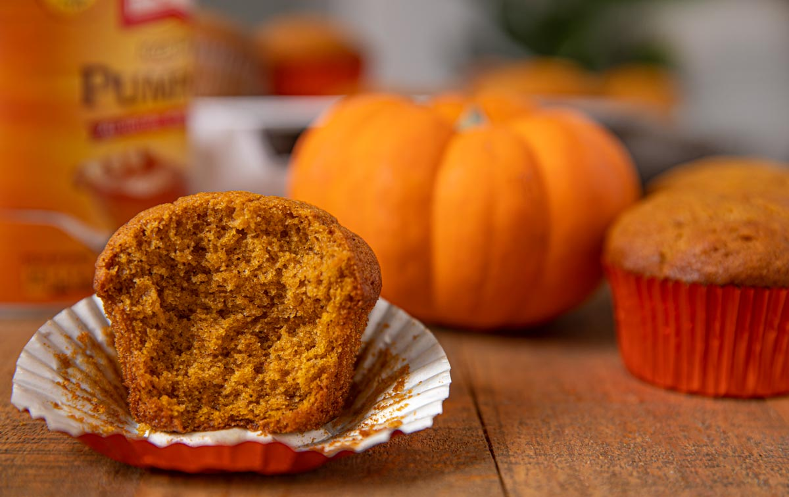

Pumpkin Muffins

"I am the Pumpkin King." - The Nightmare Before Christmas
These moist pumpkin muffins are sure to satisfy even
the pickiest eater. Make them enough times and you
may be labeled the new Pumpkin King (or Queen)!
Ingredients:
- 16 oz. pumpkin puree
- vanilla greek yogurt
- sugar
- and more!
Steps:
- Pre-heat the oven to 400 degrees and take out all ingredients. Prepare the muffin dish.
- Mix all dry ingredients together.
- In a separate bowl, mix all wet ingredients together.
- Slowly, fold the dry ingredients into the wet ingredients.
- In a small bowl, mix together sugar adn cinnamon. Put to the side.
- Fill all the muffin cups with the mixture. Sprinkle a layer of the cinnamon sugar mix on top.
- Bake for 15 min. Then enjoy!
Back to Homepage